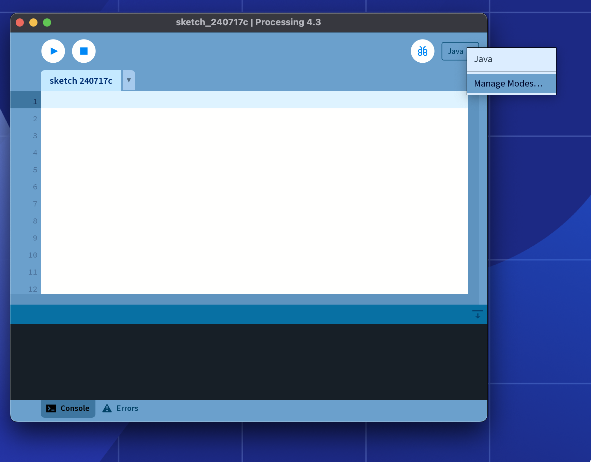

El modo Android
El componente principal de Processing para Android es el modo Android, un modo de programación para el Entorno de Desarrollo de Processing (o PDE por sus siglas en inglés), que incorpora todas las funciones necesarias para ejecutar los bosquejos de Processing en dispositivos Android y también en el emulador.
También puedes usar solamente la biblioteca principal de Android para desarrollar aplicaciones de Android con el IDE de su elección, lee este tutorial para más detalles.
Instalación rápida
Abre una ventana del editor de Processing y haz clic en el siguiente enlace:
Esto instalará la versión más reciente del modo Android.
Administrador de Contribuciones
La última versión estable del modo Android se puede instalar a través del Administrador de Contribuciones (CM por sus siglas en inglés) en el PDE. Para abrir el CM, haga clic en la flecha en el selector de modos en la barra de menú y elije "Agregar modo...":

Una vez que aparezca la ventana del CM, selecciona el Modo Android en la lista y luego haz clic en el botón de instalación en la parte inferior de la ventana:

Una vez que el modo Android esté instalado, podrás cambiarte al mismo usando el selector de modos en la barra de menú. Sigue el tutorial de introducción para dar tus primeros pasos con el modo Android.
La versión 4.6: mejoras en la estructura del proyecto y SDK
La versión 4.6 introduce actualizaciones clave en el modo Android, incluyendo una reorganización de la estructura del proyecto para facilitar la depuración y el desarrollo.
La versión 4.5: ¡Processing 4.0!
La versión 4.5 trae varias mejoras al modo Android, con un enfoque en la compatibilidad con Processing 4.0.
Versión 4.1: depurador integrado y Realidad Aumentada
La versión 4.1 introduce dos características notables en Processing para Android: un depurador integrado, idéntico al que se encuentra disponible en el modo Java, y una nueva biblioteca de realidad aumentada basada en ARCore.
Versión 4.0: fondos de pantalla animados, caras de relojes y Realidad Virtual
La versión 4.0 incorpora varias mejoras al modo Android, incluyendo nueva funcionalidad para crear fondos de pantalla animados , cara de relojes y RV. Puedes encontrar más información sobre cómo utilizar esta funcionalidad en los tutoriales y las páginas de referencia de este sitio.
Prelanzamientos
Las versiones preliminares, así como las versiones estables más antiguas, no están disponibles en el CM y deben instalarse manualmente. Para hacer esto, primero descargua el archivo AndroidMode-xyz.zip correspondiente a la versión antigua or preliminar deseada de la sección de versiones en el repositorio de GitHub del modo Android. Descomprime el archivo zip y luego mueve la carpeta AndroidMode a la carpeta de modos dentro de la carpeta de bosquejos de Processing.